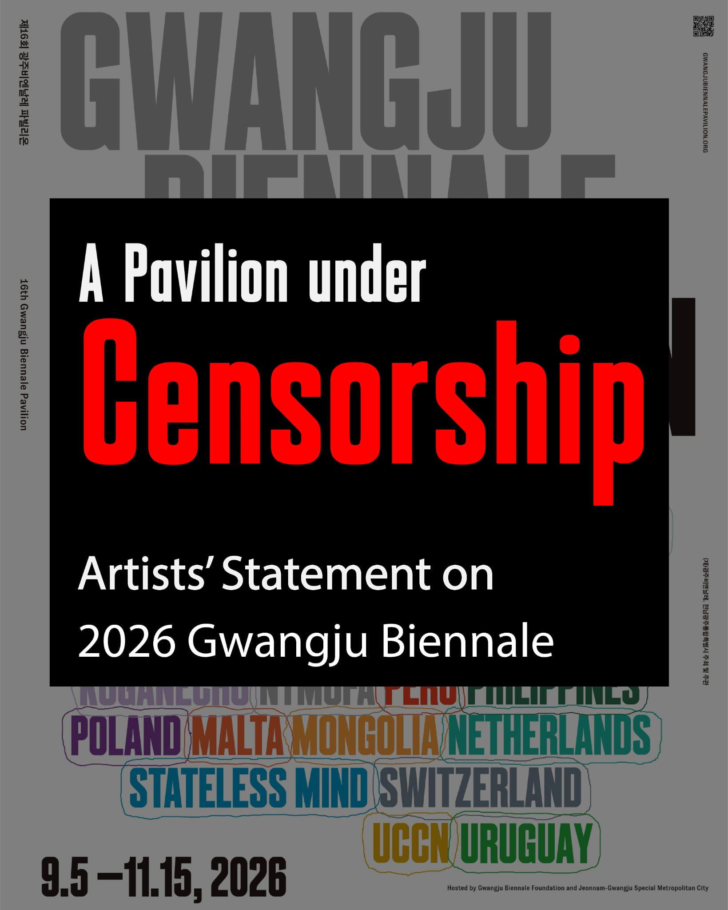

Background 事件背景 사건 경과
What is known, with dates. 目前已知事實與時間。 현재까지 확인된 사실과 날짜.
Timeline 時間線 타임라인
- 2026.01.12 The Gwangju Biennale Foundation says NTMoFA signed an agreement to take part “as an institution”.光州雙年展財團法人稱，國美館於此日簽署協議，以「機構」名義參展。(재)광주비엔날레는 국립타이완미술관이 이날 ‘기관’ 자격으로 참가하는 협약에 서명했다고 밝혔다.
- 2026.04.02 Taiwan’s Ministry of Culture approves NTMoFA’s proposal, submitted under the name “Taiwan Pavilion”.台灣文化部核定國美館以「台灣館」名義提出的參展計畫。타이완 문화부가 ‘타이완관’ 명의로 제출된 국립타이완미술관의 참가 계획을 승인했다.
- 2026.04.23 The participation agreement is signed.雙方簽署參展協議。참가 협약이 체결되었다.
- 2026.06 Foundation materials begin using “NTMoFA Pavilion”. Other participating countries are still named as countries.財團法人的資料開始使用「NTMoFA Pavilion」；其他參展國家仍以國名標示。재단 자료가 ‘NTMoFA Pavilion’을 쓰기 시작한다. 다른 참가국은 여전히 국가명으로 표기된다.
- 2026.07 Taiwan’s Ministry of Foreign Affairs notices the change.台灣外交部發現名稱遭更動。타이완 외교부가 명칭 변경을 인지한다.
- 2026.08.09 The Ministry of Culture objects publicly and instructs its overseas offices and NTMoFA to lodge protests.文化部公開表達異議，並指示駐外單位與國美館持續向主辦方抗議。문화부가 공개적으로 이의를 제기하고, 재외 사무소와 국립타이완미술관에 항의를 지시한다.
- 2026.08.15 Ten Taiwanese artists and curators issue a joint statement from Paris, condemning “political censorship of art exhibitions”.十位台灣藝術家與策展人於巴黎發表聯合聲明，譴責「對藝術展覽的政治審查」。열 명의 타이완 작가와 큐레이터가 파리에서 공동 성명을 발표하며 ‘예술 전시에 대한 정치적 검열’을 규탄한다.
- 2026.08.18 The Korean coalition Artists’ Solidarity Against Censorship demands the name be restored, the grounds disclosed, and an apology issued to the pavilion’s curator and artists.韓國「反對審查藝術家連帶」要求回復館名、公開決策依據，並向台灣館策展人與藝術家道歉。한국의 ‘검열에 반대하는 예술가 연대’가 명칭 회복, 결정 근거 공개, 큐레이터와 작가에 대한 사과를 요구한다.
- 2026.08.19 The Foundation calls the renaming “an administrative matter”. The Ministry of Culture calls that account “clearly incorrect” and points to correspondence that continued to use “Taiwan Pavilion”.財團法人稱更名為「行政事務」；文化部指其說法「明顯有誤」，並出示往來文件顯示雙方持續使用「台灣館」。재단은 명칭 변경을 ‘행정적 사안’이라고 밝혔고, 문화부는 이를 ‘명백히 사실과 다르다’며 ‘타이완관’ 표기가 이어진 왕래 문서를 제시했다.
- 2026.09.05 – 11.15 The 16th Gwangju Biennale runs in Gwangju, South Korea.第 16 屆光州雙年展於韓國光州舉行。제16회 광주비엔날레가 대한민국 광주에서 열린다.
The joint statement of 15 August 2026 2026 年 8 月 15 日聯合聲明 2026년 8월 15일 공동 성명
李亦凡 Li Yi-fan · 阮柏遠 Juan Po-yuan · 林瑜亮 Lin Yu-liang · 張紋瑄 Chang Wen-hsuan · 許哲瑜 Hsu Che-yu · 陳湘汶 Chen Hsiang-wen · 陳琬尹 Chen Wan-yin · 鄭先喻 Cheng Hsien-yu · 鄭亭亭 Cheng Ting-ting · 蘇匯宇 Su Hui-yu
Campaign material 文宣素材 캠페인 자료
{kind=link}

Click to download. Free to print, post and share. 點圖下載。歡迎自由印製、張貼與轉發。 눌러서 내려받으세요. 자유롭게 인쇄·게시·공유할 수 있습니다.